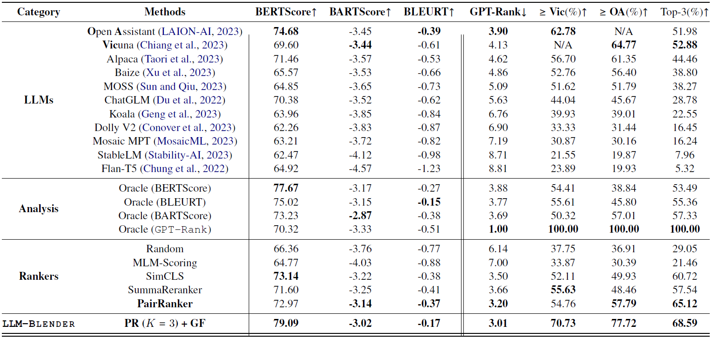

[show more]
Main Results
This table compares the performance of various LLMs on our proposed MixInstruct dataset, along with the oracle analysis of auto metrics (BARTScore, etc.), ranker's performance and our LLM-BLender's performance.
Here GPT-Rank is computed by rank the candidates by their number of winning times in the pairwise comparisons from ChatGPT, which we take as the ground-truth comparison results in our experiments.
It is evident that different LLMs vary significantly in their performance, show a diverse set of strengths and weaknesses, as represented by GPT-Rank.
Our PairRanker module effectively improve the average GPT-Rank to 3.20 compared to the best model Open Assistant (3.90) and Vicuna (4.13), proving the effectiveness of ranking for LLMs. It also outperforms all the other rankers, including the auto metrics's performance, showcasing great capability of pairwise comparison paradigm.
Furthermore, our LLM-Blender framwork manages to generate candidates not only with the highest scores in auto metrics like BARTScore (79.09), but also with better correlation with ChatGPT evaluation, represented by the best GPT-Rank (3.01), percentage of winning times compared to Vicuna (70.73) and Open Assistant (77.72), and the percentage that is viewed as top-3 by ChatGPT (68.59). These overall results prove the effectiveness of our LLM-Blender framework.